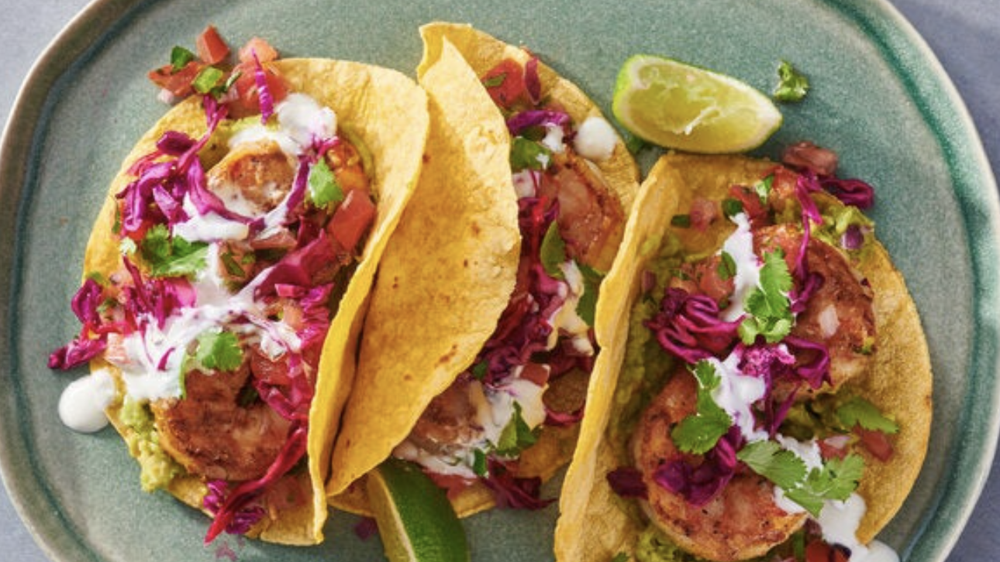
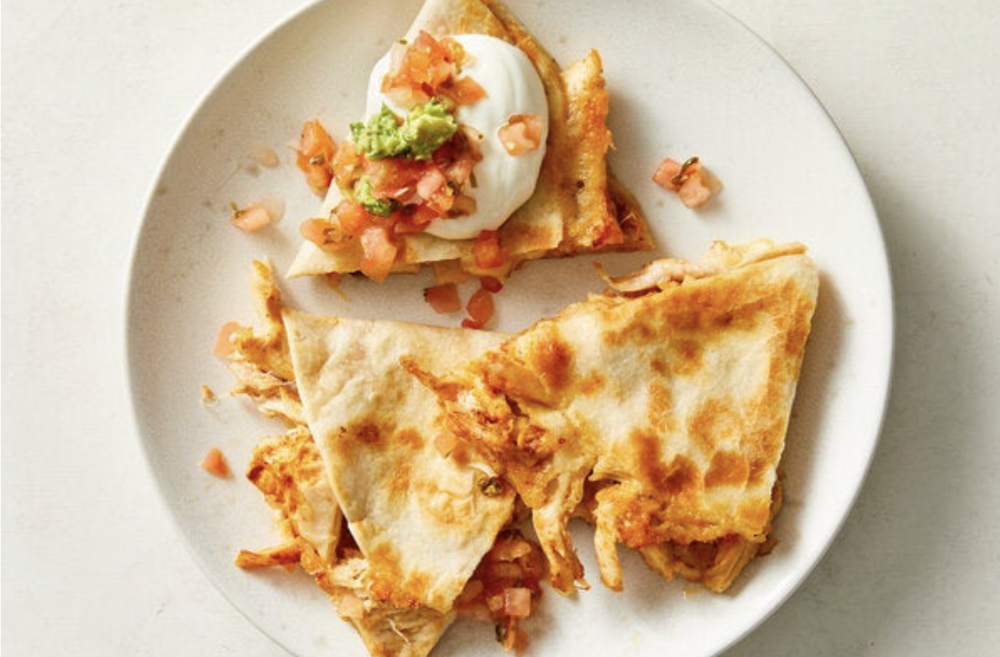
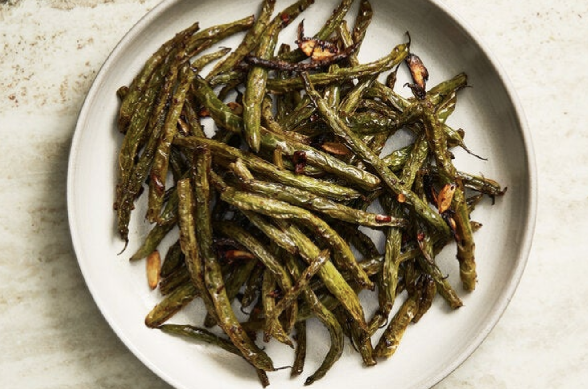

Recipes
Shrimp Tacos
Spiced shrimp and quick-pickled red cabbage fill corn tortillas for dressed-up tacos that are easy to put together and sure to be a favorite. The seasoned shrimp is cooked in a heated skillet for a slight char, but resist the temptation to move the pieces before the contact side is properly browned. You can keep the add-ons simple with slices of creamy avocado, bits of fresh cilantro and acidic bursts from lime slices. Or bulk up with dollops of guacamole, chunky pico de gallo, and sour cream. The choice is yours!
Ingridients
- 1 pound peeled and deveined shrimp, tails removed
- ½ teaspoon ground cumin
- ¼ teaspoon cayenne pepper
- ½teaspoon onion powder
- ½ teaspoon garlic powder
- ¼ teaspoon black pepper
- 3 tablespoons neutral oil, such as grapeseed or canola
- Kosher salt (such as Diamond Crystal)
- 1½ cups thinly sliced red cabbage (¼ small cabbage)
- 2 limes
- 12 corn tortillas
- Guacamole
- Sour cream
- Pico de gallo
- Cilantro leaves
Step 1
In a medium bowl, toss the shrimp with the cumin, cayenne, onion powder, garlic, black pepper and 1 tablespoon oil. Season the shrimp lightly with salt. If you have time, you can refrigerate the shrimp to marinate for at least 30 minutes and up to 12 hours.
Step 2
Squeeze 1 tablespoon juice from 1 lime. Slice the remaining lime into wedges for serving. In a small bowl, quick pickle the cabbage by combining the shredded cabbage with the lime juice and a pinch of salt. Toss together and set aside.
Step 3
Heat a large (12-inch) skillet over medium. Warm a tortilla in the dry skillet, flipping once, until soft and pliable, about 30 seconds. Place in a dish towel to keep warm. Repeat until all the tortillas are warmed, stacking and wrapping them in the dish towel until ready to use.
Step 4
Heat a tablespoon of oil in the skillet over medium-high. Add half of the shrimp and cook without stirring until the contact side is browned around the edges, about 3 minutes. Flip to cook the other side for 1 to 2 minutes, until the shrimp is fully cooked. Move to a plate and cook the remaining shrimp, heating up the remaining tablespoon of oil before adding the shrimp to get a nice sear.
Step 5
To assemble, spread some guacamole down the middle of each tortilla. Divide the shrimp among the warm tortillas and top with crema, pico de gallo, quick pickled cabbage and cilantro leaves. Serve immediately with lime slices for squeezing.
Chicken Quesidillas
Ever the reliable 10-minute snack or meal, chicken quesadillas are not hard to make, but a few pointers ensure they’re as gooey, crispy and delicious as possible: Start with cool, shredded chicken so it doesn’t make the tortilla soggy. Toss the chicken and cheese together for even distribution, and add a smidgen of chili powder to the filling for spunk. Cook the quesadilla over moderate heat, so the cheese melts just as the tortilla’s toasted.
Ingridients
- ¾ cup/4 ounces cooked, shredded, cooled chicken
- 1 cup/4 ounces shredded Cheddar, Mexican blend, pepper Jack or Monterey Jack cheese
- ½ teaspoon chili powder
- 2(8- to 10-inch) flour tortillas
- Any combination of hot sauce, crema, salsa and guacamole (all optional), for serving
Step 1
Heat a large nonstick skillet over medium. Meanwhile, in a medium bowl, toss together the chicken, cheese and chili powder until combined. Sprinkle half the filling across half of each tortilla, then fold the tortillas over the filling to create a half moon.
Step 2
Add the folded tortillas to the skillet, making a circle. Cook, pressing down occasionally, until the cheese has melted and the tortillas are crisp and golden, 1 to 3 minutes per side.
Step 3
Transfer to plates, let sit for about 30 seconds, then cut into wedges and eat with desired toppings.
Air-Fryer Green Beans
Tossed simply with balsamic vinegar, olive oil, red-pepper flakes and grated garlic, green beans in the air fryer blister beautifully in a fraction of the time without heating up the oven. Equally tasty hot or at room temperature, these green beans can be made ahead and set aside if you want to cook a main dish in the air fryer after they’ve crisped. Green beans will crisp up nicely if left undisturbed in the air fryer, but like an oven, an air fryer can contain hot spots, so it’s worth shaking the green beans at least once for even cooking.
Ingridients
- ½ pound green beans, trimmed
- 1½ tablespoons balsamic vinegar
- 1 tablespoon extra-virgin olive oil
- ¼ teaspoon red-pepper flakes
- ¼ teaspoon red-pepper flakes
- Salt
Step 1
Heat air fryer to 375 degrees, if preheating is recommended for your air fryer.
Step 2
In a medium bowl, combine the green beans, vinegar, olive oil, red-pepper flakes and garlic. (If there are any nubbins of garlic left after grating, throw those pieces into the air fryer as well; those bits transform into tasty crisps, golden on the outside but still tender and soft inside.) Season the green beans with salt and toss to coat, massaging the garlic onto the green beans.
Step 3
Transfer green beans to the air fryer basket and scrape any remaining dressing on top. Fry at 375 degrees for 8 to 10 minutes, tossing with tongs or shaking the basket halfway through, until the green beans are charred in spots and fork-tender. (If you like your green beans with more bite, fry them on the lower end of this time range.)
Step 4
Transfer green beans and any crisped garlic pieces back to the mixing bowl or to a new serving bowl and top with any remaining sauce from the air fryer. Season to taste with salt and serve hot or at room temperature.